# Verificar, instalar y activar el paquete "tidyverse"if (!require(tidyverse)) {install.packages("tidyverse")}library(tidyverse)# Verificar, instalar y activar el paquete "kableExtra"if (!require(kableExtra)) {install.packages("kableExtra")}library(kableExtra)# Verificar, instalar y activar el paquete "readxl"if (!require(readxl)) {install.packages("readxl")}library(readxl)
1 .MODELOS PROBABILISTICOS
Los modelos discretos probabilísticos son herramientas de la probabilidad que se usan para describir situaciones donde los resultados posibles son contables (no infinitos continuos), es decir, se pueden enumerar uno por uno.
Los modelos probabilísticos se clasifican principalmente según el tipo de valores que pueden tomar las variables y cómo se comporta el fenómeno.
1. Según el tipo de variable
a) Modelos Discretos
Se usan cuando los valores son contables (enteros).
Ejemplos:
0, 1, 2, 3 personas
Número de llamadas
Cantidad de errores
Modelos típicos:
Binomial
Poisson
Hipergeométrica
b) Modelos Continuos
Se usan cuando los valores pueden ser cualquier número dentro de un intervalo (incluye decimales).
Ejemplos:
Tiempo (1.2 horas, 3.75 min)
Peso (70.5 kg)
Estatura
Modelos típicos:
Normal
Exponencial
Uniforme continua
Modelos Probabilisticos Discretos
Distribucion Binomia
La distribución binomial es un modelo probabilístico discreto que permite calcular la probabilidad de obtener un número específico de éxitos en un conjunto de ensayos independientes, donde cada ensayo tiene únicamente dos posibles resultados: éxito o fracaso.
Características de la distribución binomial
Número fijo de ensayos (n): El experimento se repite un número determinado de veces.
Dos resultados posibles: En cada ensayo solo puede ocurrir:
Éxito
Fracaso
Probabilidad constante (p): La probabilidad de éxito se mantiene igual en todos los ensayos.
Independencia de los ensayos: El resultado de un ensayo no influye en los demás.
Variable aleatoria discreta: La variable representa el número de éxitos obtenidos y solo puede tomar valores enteros (0, 1, 2, ..., n).
Función de probabilidad
La probabilidad de obtener exactamente ( k ) éxitos en ( n ) ensayos está dada por:
P(X=k)=\binom{n}{k} p^k (1-p)^{n-k}
Donde:
( n ): número total de ensayos
( k ): número de éxitos
( p ): probabilidad de éxito
( (1 - p) ): probabilidad de fracaso
\binom{n}{k}: combinaciones de ( n ) elementos tomados de ( k ) en ( k )
Media y varianza
La distribución binomial tiene las siguientes medidas:
Media (valor esperado):
\mu = np
Varianza:
\sigma^2 = np(1-p)
Desviación estándar:
\sigma = \sqrt{np(1-p)}
TALLER MODELOS DISCRETOS DE PROBABILIDAD
2 .Distribucion Binomial
Ejercicios
Ejercicio 1. Se sabe que el 60% de los alumnos de una universidad asisten a clases el viernes. En una encuesta a 8 alumnos de la universidad, ¿Cuál es la probabilidad de que a) por lo menos siete asistan a clase el viernes? b) por lo menos dos no asistan a clase.
Existe un 0.8936 89.36% de probabilidad de que al menos 2 estudiantes no asistan a clase, considerando un grupo de 8 estudiantes donde cada uno tiene una probabilidad de 0.4 de no asistir.
Ver código
n =8p =0.4rango =0:ndf_3 =data.frame(x = rango, y =dbinom(rango, size=n, prob=p))ggplot(df_3, aes(x = x, y = y, fill=factor(ifelse(x>=2,"Valor","Resto")))) +geom_bar(stat ="identity",width =0.25) +xlab("x") +ylab("Cuantía") +ggtitle("Distribución Binomial") +scale_fill_manual(name ="", values=c("#b349f5","#02b8fa")) +theme_bw()
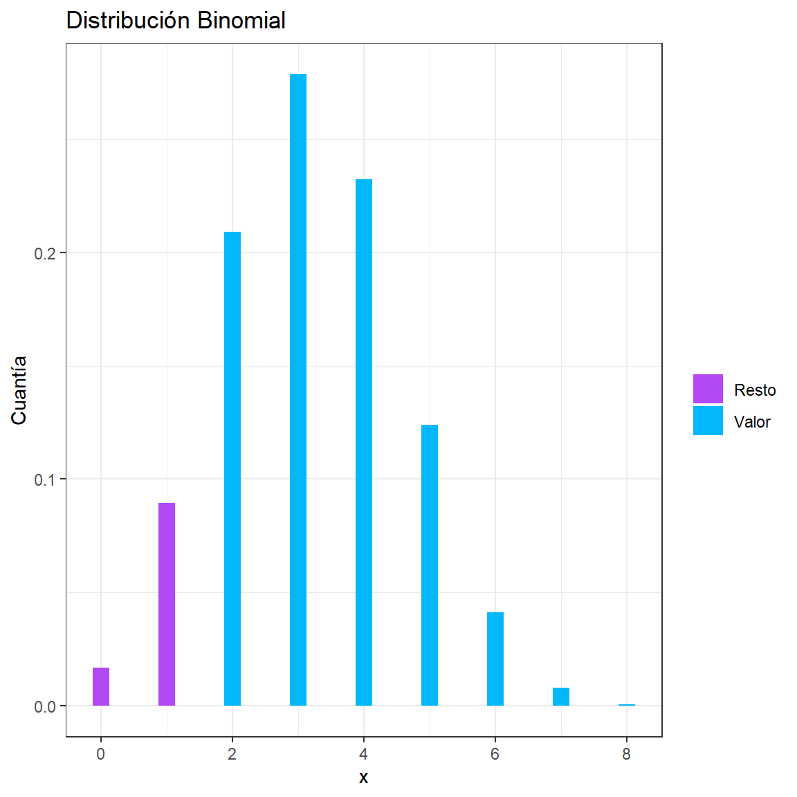
EJERCICIO 2
2.- Según los registros universitarios fracasa el 5% de los alumnos de cierto curso. ¿cuál es la probabilidad de que, de 6 estudiantes seleccionados al azar, menos de 3 hayan fracasado?
rango =0:6df_3 =data.frame(x = rango, y =dbinom(rango, size=6, prob=0.05))ggplot(df_3, aes(x = x, y = y, fill=factor(ifelse(x==3,"Valor","Resto")))) +geom_bar(stat ="identity",width =0.25) +xlab("x") +ylab("Cuantía") +ggtitle("Distribución Binomial") +scale_fill_manual(name ="", values=c("#b349f5","#02b8fa")) +theme_bw()
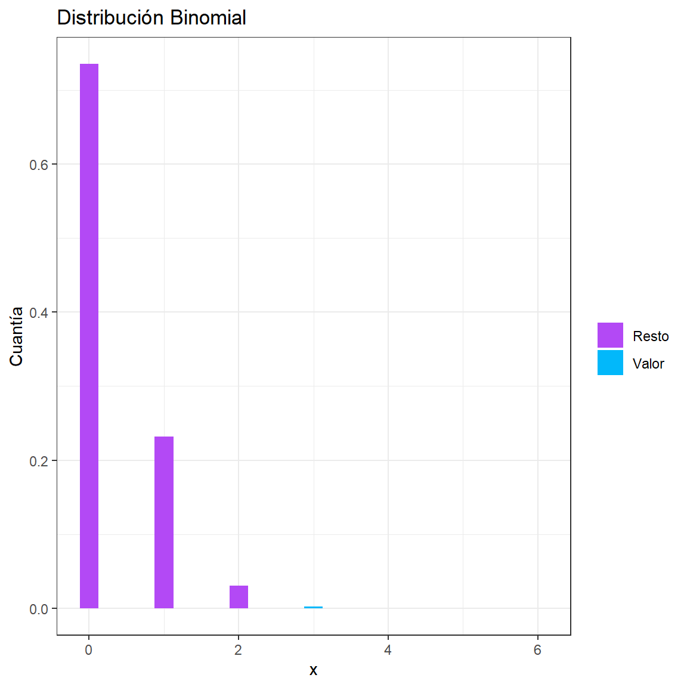
EJERCICIO 3
3.- En promedio, el 10% de las varillas de madera usadas en cierto producto presentan problemas para ser usadas. ¿cuál es la probabilidad de que en un paquete de 15 varillas, a) encuentre exactamente 5 con defectos, b) por lo menos 10 estén nudosas, c) no más de 4 estén nudosas.
n =15p =0.10c =round(pbinom(4,size=n,prob=p),4)cat("c) La probabilidad de que no más de 4 estén defectuosas es:", c)
c) La probabilidad de que no más de 4 estén defectuosas es: 0.9873
Ver código
rango =0:ndf_3 =data.frame(x = rango, y =dbinom(rango, size=n, prob=p))ggplot(df_3, aes(x = x, y = y, fill=factor(ifelse(x==4,"Valor","Resto")))) +geom_bar(stat ="identity",width =0.25) +xlab("x") +ylab("Cuantía") +ggtitle("Distribución Binomial") +scale_fill_manual(name ="", values=c("#b349f5","#02b8fa")) +theme_bw()
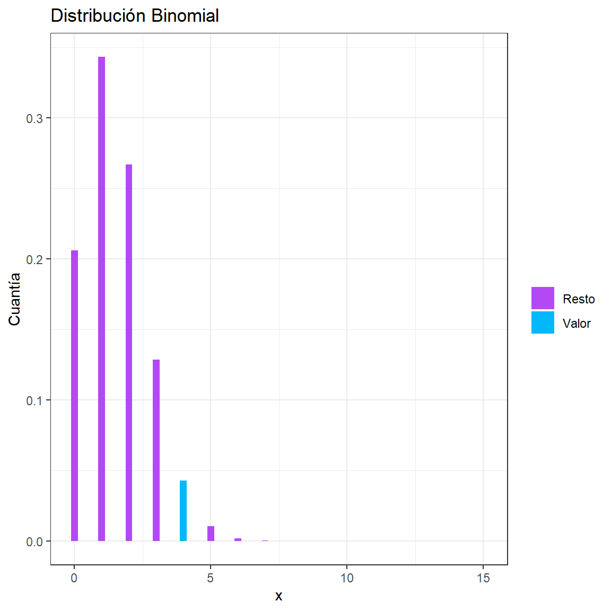
EJERCICIO 4
4.- Una compañía de seguros considera que alrededor del 25% de los carros se accidentan cada año. ¿Cuál es la probabilidad de que por lo menos 3 de una muestra de 7 vehículos asegurados, se haya accidentado?
n =7p =0.25resultado =round(pbinom(2,size=n,prob=p, lower.tail=FALSE),4)cat("La probabilidad de que por lo menos 3 vehículos se hayan accidentado es:", resultado)
La probabilidad de que por lo menos 3 vehículos se hayan accidentado es: 0.2436
Ver código
rango =0:ndf_3 =data.frame(x = rango, y =dbinom(rango, size=n, prob=p))ggplot(df_3, aes(x = x, y = y, fill=factor(ifelse(x==5,"Valor","Resto")))) +geom_bar(stat ="identity",width =0.25) +xlab("x") +ylab("Cuantía") +ggtitle("Distribución Binomial") +scale_fill_manual(name ="", values=c("#b349f5","#02b8fa")) +theme_bw()
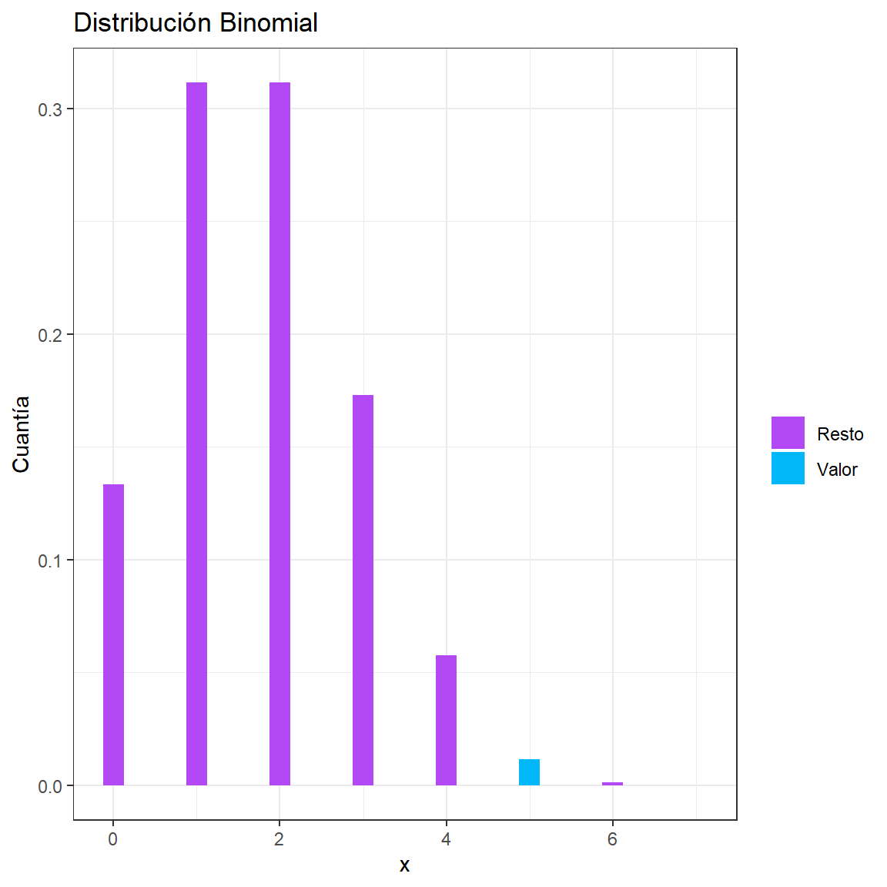
EJERCICIO 5
5.- Los registros muestran que 30% de los pacientes admitidos en una clínica, no pagan sus facturas y eventualmente se condona la deuda. Suponga que llegan 4 nuevos pacientes a la clínica, ¿cuál es la probabilidad de que se tenga que perdonar la deuda de uno de los cuatro? b) los cuatro pacientes paguen sus facturas.
n =4p =0.30b =round(dbinom(0,size=n,prob=p),4)cat("b) La probabilidad de que los 4 pacientes paguen es:", b)
b) La probabilidad de que los 4 pacientes paguen es: 0.2401
Ver código
rango =0:ndf_3 =data.frame(x = rango, y =dbinom(rango, size=n, prob=p))ggplot(df_3, aes(x = x, y = y, fill=factor(ifelse(x==0,"Valor","Resto")))) +geom_bar(stat ="identity",width =0.25) +xlab("x") +ylab("Cuantía") +ggtitle("Distribución Binomial") +scale_fill_manual(name ="", values=c("#b349f5","#02b8fa")) +theme_bw()
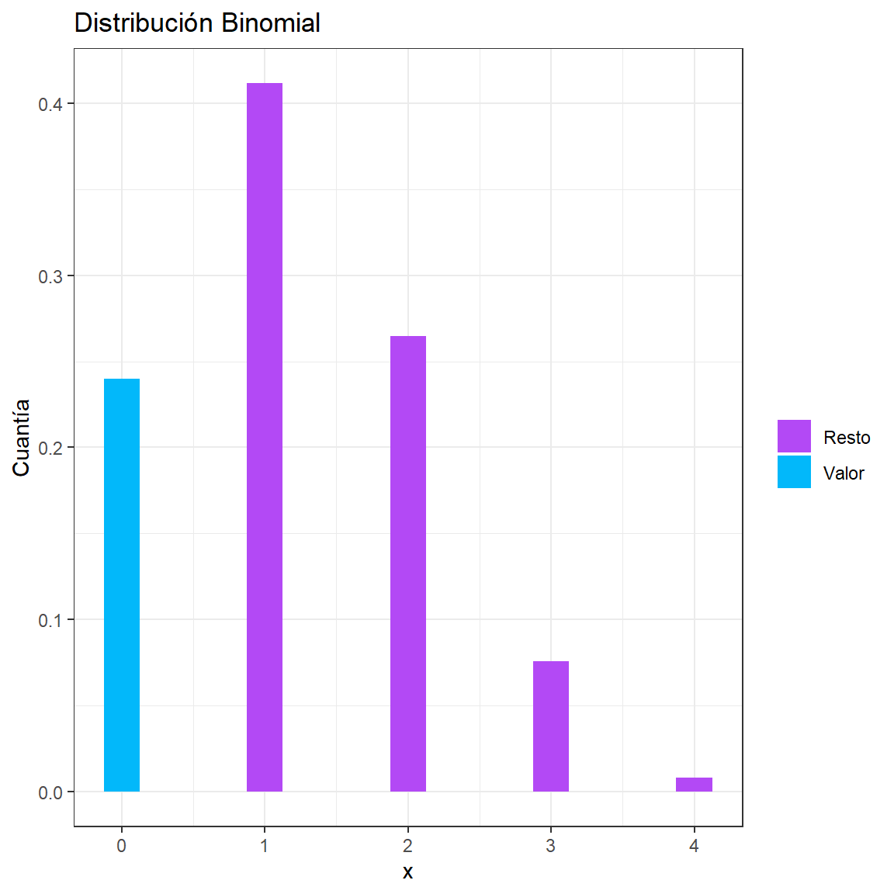
3 .Distribucion de Poisson:
La distribución de Poisson es un modelo de probabilidad que se utiliza para contar cuántas veces ocurre un evento en un intervalo fijo de tiempo, espacio o área.
Ejemplos típicos:
Número de llamadas en un call center
Accidentes en una fábrica
Clientes que llegan a un negocio
Fórmula
[
P(X = x) = \frac{e^{-\lambda} \lambda^x}{x!}
]
Donde:
( X ) = número de eventos
( \lambda )= promedio de ocurrencias
( x ) = número de eventos que queremos calcular
( e )= constante ≈ 2.71828
*Características principales**
1.Variable discreta
Solo toma valores enteros: $ 0, 1, 2, 3, …$
Depende de un solo parámetro
( \lambda ) (media o promedio)
Media y varianza
Media = λ Varianza = λ
Esto es clave: ambas son iguales
Eventos independientes
Que ocurra un evento no afecta a otro.
Ocurre en intervalos fijos
Tiempo, distancia, área, etc.
Probabilidad de ocurrencia constante
La tasa (λ) no cambia en el intervalo.
Eventos raros
Se usa mucho cuando los eventos no son muy frecuentes.
Cuándo usar Poisson
Se usa cuando:
Se cuentan eventos
Ocurren de forma aleatoria
Se conoce el promedio (λ)
Se analiza un intervalo fijo
Ejercicios
EJERCICIOS 6. - El conmutador de un hospital recibe en promedio 20 llamadas cada dos minutos. Cuál es la probabilidad de que lleguen como máximo dos llamadas en un periodo de 15 segundos.
cat(" 0.7576\n\n Hay un 75.76% de probabilidad de que lleguen como máximo 2 llamadas en 15 segundos.")
0.7576
Hay un 75.76% de probabilidad de que lleguen como máximo 2 llamadas en 15 segundos.
Ver código
rango <-0:10promedio_llamadas <-2.5prob_poisson <-round(dpois(rango, lambda = promedio_llamadas), 4)df_3 <-data.frame(numero_llamadas = rango, probabilidad = prob_poisson)ggplot(df_3, aes(x = numero_llamadas, y = probabilidad, fill =factor(ifelse(numero_llamadas <=2, "Valor", "Resto")))) +geom_bar(stat ="identity", width =0.25) +xlab("Número de Llamadas") +ylab("Cuantía") +ggtitle("Distribución de Poisson") +scale_fill_manual(name ="", values =c("#b349f5", "#02b8fa"))
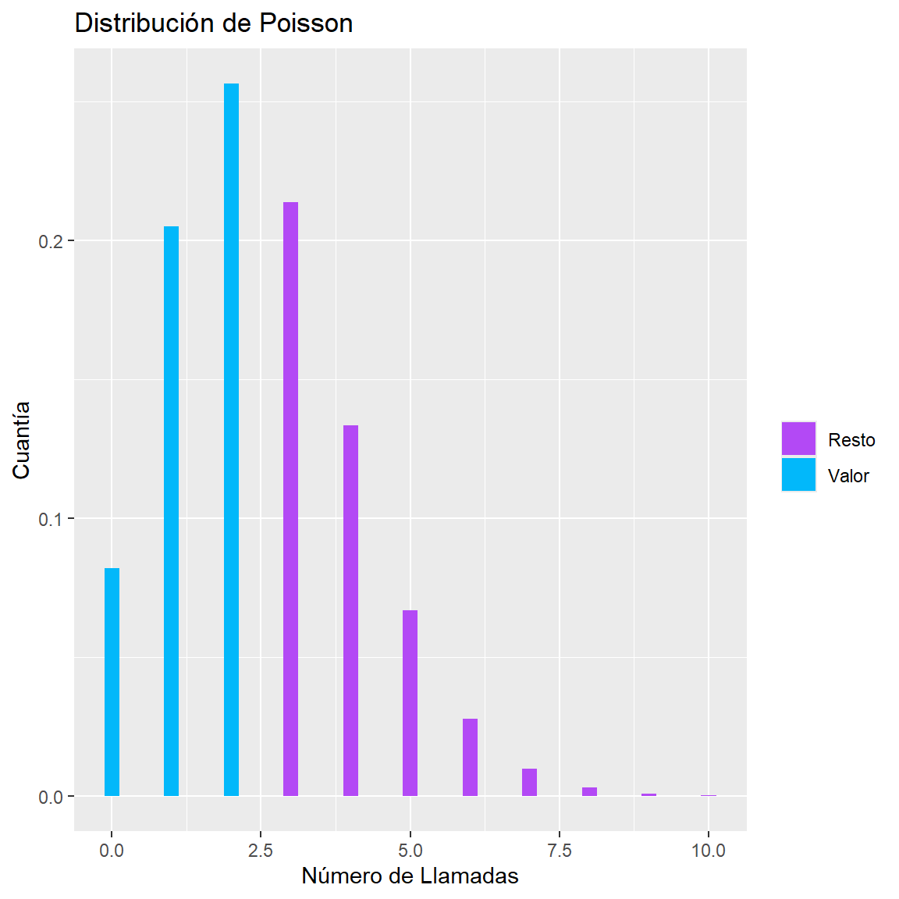
Ejercicio 7. - Los clientes llegan a una exhibición a razón de 6,8 clientes / hora Calcule la probabilidad de que a) en la primera media hora por lo menos lleguen dos clientes; b) en cualquier hora dada llegue más de uno.
La probabilidad de que en una hora lleguen más de 1 cliente es: 0.9926
Esto indica que es casi seguro (99.26%) que llegue más de un cliente en una hora.
Ver código
rango <-0:5promedio_accidentes <-6.8prob_poisson <-round(dpois(rango, lambda = promedio_accidentes), 4)df_3 <-data.frame(numero_clientes = rango, probabilidad = prob_poisson)ggplot(df_3, aes(x = numero_clientes, y = probabilidad, fill =factor(ifelse(numero_clientes ==2, "Valor", "Resto")))) +geom_bar(stat ="identity", width =0.25) +xlab("Número de Clientes") +ylab("Cuantía") +ggtitle("Distribución de Poisson (Inciso b)") +scale_fill_manual(name ="", values =c("#b349f5", "#02b8fa"))
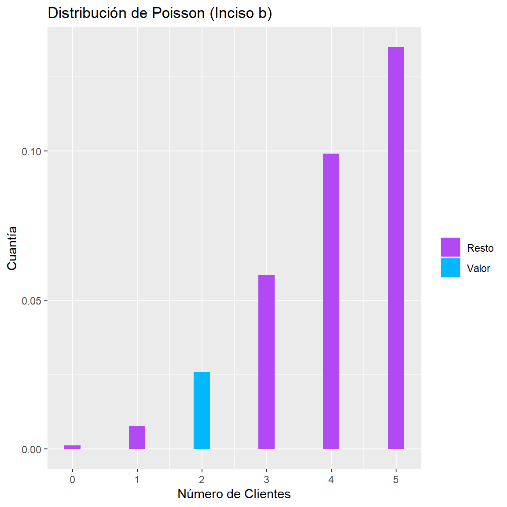
Ejercicio 8. - El número promedio de urgencias que llega a un hospital en una hora es de 12. Cuál es la probabilidad de que en un minuto lleguen por lo menos 2 urgencias? ¿Cuál es el número de urgencias esperado por minuto?
lambda <-0.2k <-1probabilidad <-round(ppois(k, lambda, lower.tail =FALSE), 4)cat( probabilidad, "\n\n Hay un", probabilidad*100, "% de probabilidad de que lleguen por lo menos 2 urgencias en un minuto.")
0.0175
Hay un 1.75 % de probabilidad de que lleguen por lo menos 2 urgencias en un minuto.
Ver código
rango <-0:5promedio_urgencias <-0.2prob_poisson <-round(dpois(rango, lambda = promedio_urgencias), 4)df_3 <-data.frame(numero_urgencias = rango, probabilidad = prob_poisson)ggplot(df_3, aes(x = numero_urgencias, y = probabilidad, fill =factor(ifelse(numero_urgencias >=2, "Valor", "Resto")))) +geom_bar(stat ="identity", width =0.25) +xlab("Número de Urgencias") +ylab("Cuantía") +ggtitle("Distribución de Poisson (Inciso A)") +scale_fill_manual(name ="", values =c("#b349f5", "#02b8fa"))
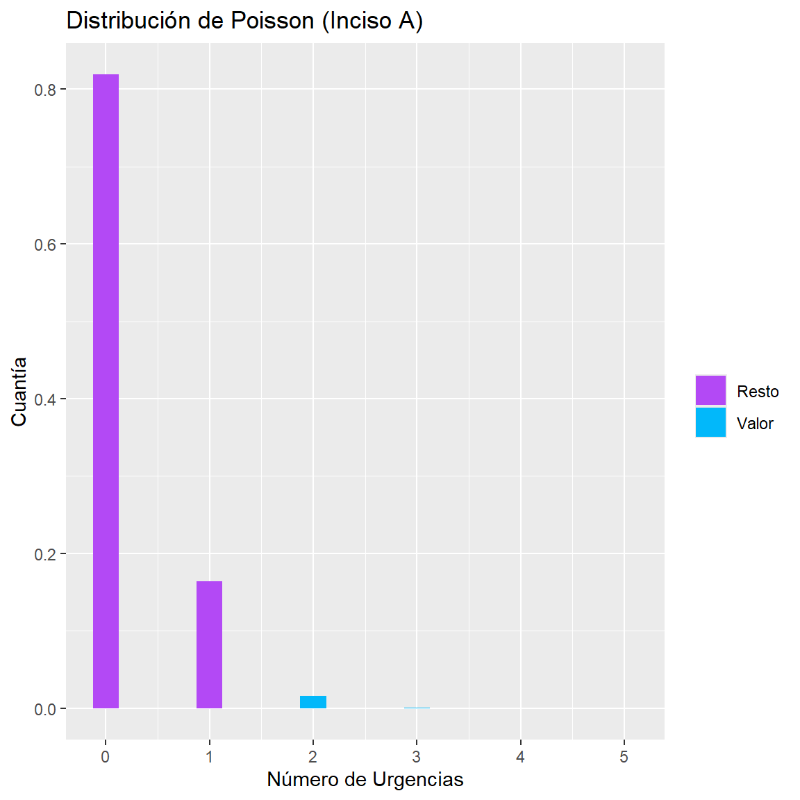
¿Cuál es el número de urgencias esperado por minuto?
lambda <-0.2esperado <- lambdacat( esperado, "\n\n El número esperado de urgencias por minuto es de", esperado)
0.2
El número esperado de urgencias por minuto es de 0.2
Ver código
rango <-0:5promedio_urgencias <-0.2prob_poisson <-round(dpois(rango, lambda = promedio_urgencias), 4)df_3 <-data.frame(numero_urgencias = rango, probabilidad = prob_poisson)ggplot(df_3, aes(x = numero_urgencias, y = probabilidad)) +geom_bar(stat ="identity", fill ="#b349f5", width =0.25) +xlab("Número de Urgencias") +ylab("Cuantía") +ggtitle("Distribución de Poisson (Valor esperado λ = 0.2)")
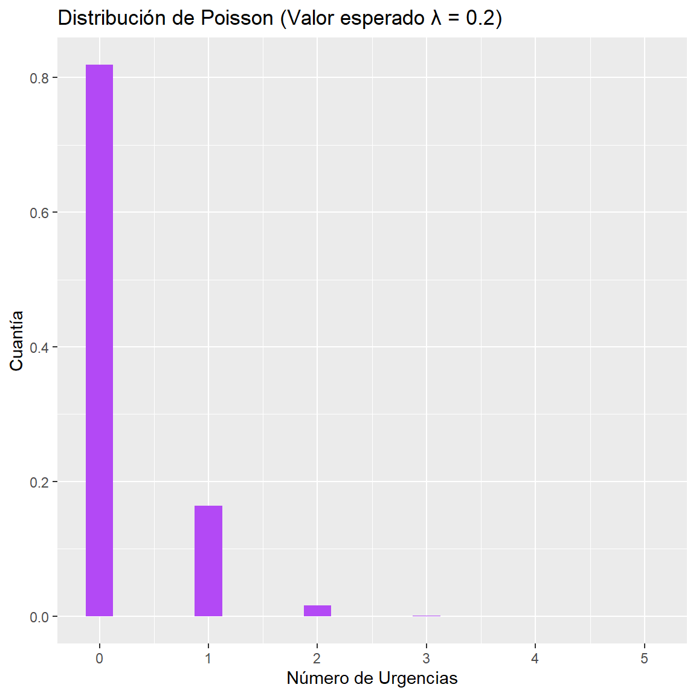
Ejercicio 9. - Las estadísticas indican que en una fábrica se presentan en promedio 10 accidentes por trimestre. Determine la probabilidad de que no haya más de 12 accidentes en el último trimestre.
La probabilidad de que ocurran no más de 12 accidentes en un trimestre es: 0.7916 Esto significa que hay un 79.16% de probabilidad de que los accidentes no superen los 12 en ese periodo.
Ver código
rango <-0:15promedio_accidentes <-10prob_poisson <-round(dpois(rango, lambda = promedio_accidentes), 4)df_3 <-data.frame(numero_accidentes = rango, probabilidad = prob_poisson)ggplot(df_3, aes(x = numero_accidentes, y = probabilidad, fill =factor(ifelse(numero_accidentes <=12, "Valor", "Resto")))) +geom_bar(stat ="identity", width =0.25) +xlab("Número de Accidentes") +ylab("Cuantía") +ggtitle("Distribución de Poisson") +scale_fill_manual(name ="", values =c("#b349f5", "#02b8fa"))
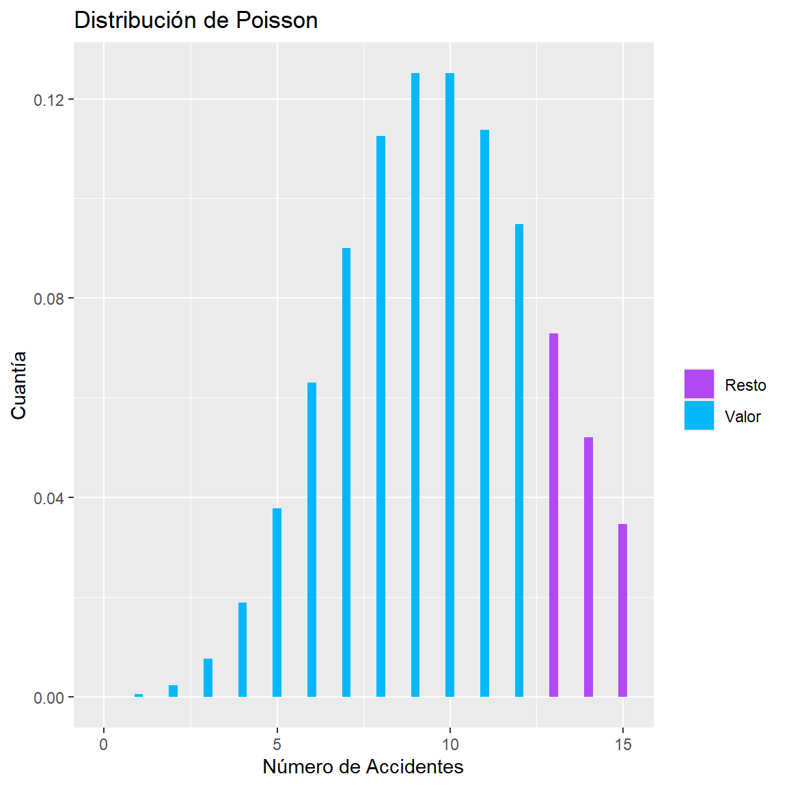
Ejercicio 10. - El número de personas que ingresan a la unidad de cuidados intensivos de un hospital en un día cualquiera, es de 5 personas diarias. ¿Cuál es la probabilidad de que el número de personas que ingresan a la unidad de cuidados intensivos en un día particular sea menor o igual a 2 personas?
Inciso A) ¿Cuál es la probabilidad de que el número de personas que ingresan a la unidad de cuidados intensivos en un día particular sea menor o igual a 2 personas?
lambda <-5k <-2probabilidad <-round(ppois(k, lambda), 4)cat( probabilidad, "\n\n Hay un", probabilidad*100, "% de probabilidad de que ingresen como máximo 2 personas en un día.")
0.1247
Hay un 12.47 % de probabilidad de que ingresen como máximo 2 personas en un día.
Ver código
rango <-0:10promedio_personas <-5prob_poisson <-round(dpois(rango, lambda = promedio_personas), 4)df_3 <-data.frame(numero_personas = rango, probabilidad = prob_poisson)ggplot(df_3, aes(x = numero_personas, y = probabilidad, fill =factor(ifelse(numero_personas <=2, "Valor", "Resto")))) +geom_bar(stat ="identity", width =0.25) +xlab("Número de Personas") +ylab("Cuantía") +ggtitle("Distribución de Poisson (Inciso A)") +scale_fill_manual(name ="", values =c("#b349f5", "#02b8fa"))
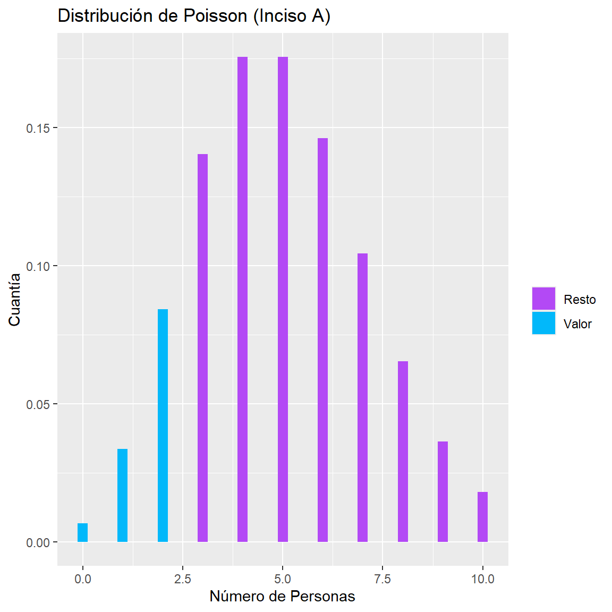
4 .Distribucion Hipergeometrica
La distribución hipergeométrica es una distribución de probabilidad discreta que se usa cuando se seleccionan elementos sin reemplazo de una población finita.
¿Cuándo se usa?
Se aplica cuando:
Hay una población total finita (N)
Existen dos tipos de elementos:
Éxitos (K)
Fracasos (N − K)
Se extrae una muestra sin reemplazo (n)
Se quiere saber la probabilidad de obtener x éxitos
La probabilidad cambia en cada selección porque NO hay reemplazo
Esto la diferencia de la binomial, donde sí hay reemplazo o independencia.
Ejercicios
Ejercicio 11. - Un jefe de almacén sabe que 6 de las 25 bicicletas que tiene para la venta presentan fallas en los frenos y necesitan ajuste. Si el vendedor que no tenía conocimiento de lo anterior vendió en el día 4 bicicletas, ¿cuál es la probabilidad de que vendiera dos de las que requerían ajuste.
Existe una probabilidad de 0.2375 (23.75%) de que el vendedor haya vendido exactamente 2 bicicletas con fallas en los frenos.
Ver código
probabilidades_fallas <-c(choose(6, 0) *choose(19, 4) /choose(25, 4),choose(6, 1) *choose(19, 3) /choose(25, 4),choose(6, 2) *choose(19, 2) /choose(25, 4),choose(6, 3) *choose(19, 1) /choose(25, 4),choose(6, 4) *choose(19, 0) /choose(25, 4))etiquetas_fallas <-c("0", "1", "2", "3", "4")colores <-ifelse(1:length(probabilidades_fallas) ==3, "#b349f5", "#02b8fa")barplot(probabilidades_fallas, names.arg = etiquetas_fallas, col = colores, main ="Probabilidad de venta de bicicletas con falla", ylab ="Probabilidad", ylim =c(0, 0.5), xlab ="Cantidad de bicicletas con falla vendidas")legend("topright", legend =c("Valor (2 bicicletas)", "Resto"), fill =c("#b349f5", "#02b8fa"))
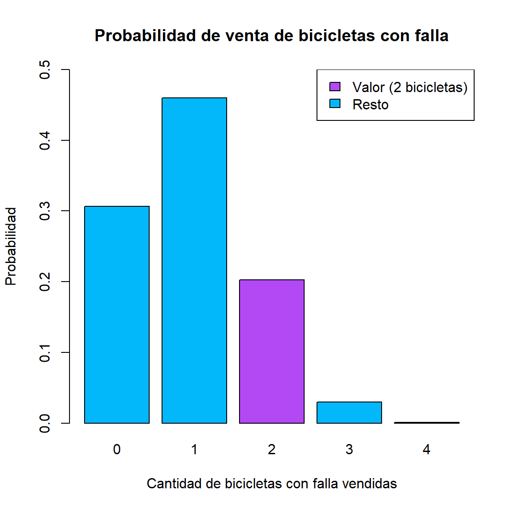
Ejercicio 12. -De un grupo de 20 ingenieros con doctorado, se seleccionan 10 para un alto cargo de una compañía. ¿Cuál es la probabilidad de que los 10 seleccionados incluya a los 5 ingenieros que tienen las mejores calificaciones del grupo de 20?
probabilidades_mejores <-c(choose(5, 0) *choose(15, 10) /choose(20, 10),choose(5, 1) *choose(15, 9) /choose(20, 10),choose(5, 2) *choose(15, 8) /choose(20, 10),choose(5, 3) *choose(15, 7) /choose(20, 10),choose(5, 4) *choose(15, 6) /choose(20, 10),choose(5, 5) *choose(15, 5) /choose(20, 10))etiquetas_mejores <-c("0","1","2","3","4","5")colores <-ifelse(1:length(probabilidades_mejores) ==6, "#b349f5", "#02b8fa")barplot(probabilidades_mejores, names.arg = etiquetas_mejores, col = colores, main ="Probabilidad de selección de los mejores ingenieros", ylab ="Probabilidad", ylim =c(0, 0.5), xlab ="Cantidad de ingenieros con mejores calificaciones")legend("topright", legend =c("Valor (5 ingenieros)", "Resto"), fill =c("#b349f5", "#02b8fa"))
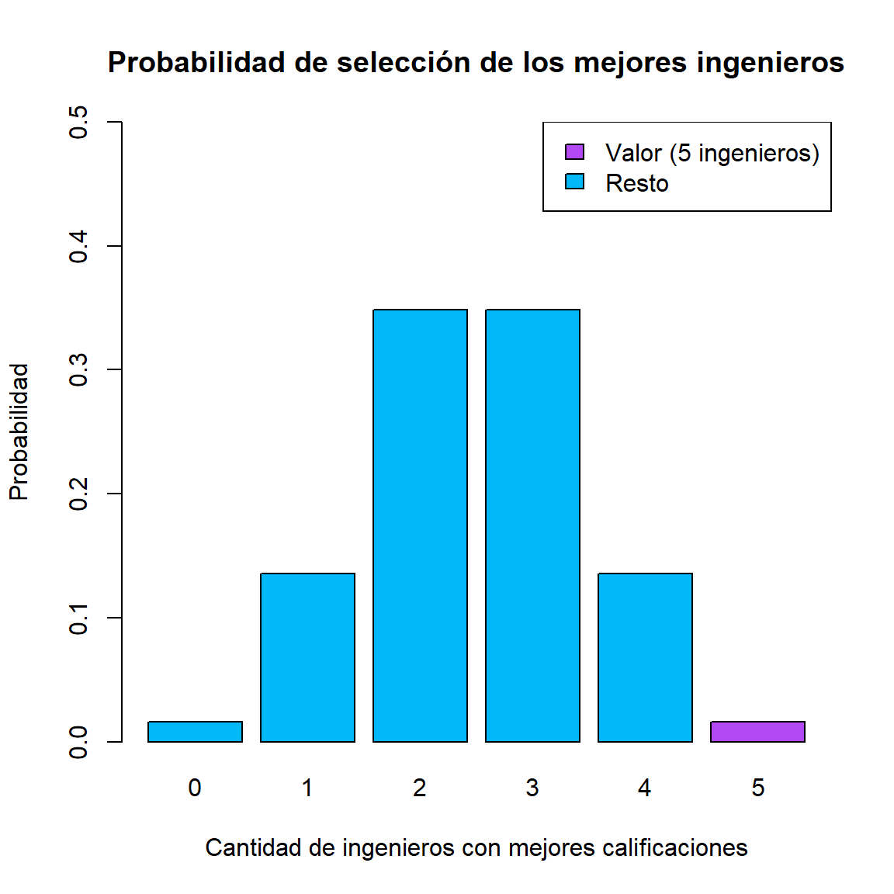
Ejercicio 13. - Un almacén contiene diez maquinas impresoras, cuatro de las cuales están defectuosas. Una compañía selecciona al azar cinco de las maquinas, pensando que todas están en condiciones de trabajar, ¿cuál es la probabilidad de que las cinco maquinas estén en buen estado?